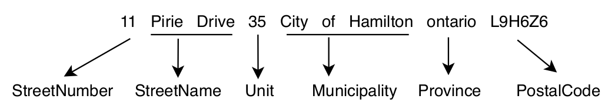

Retrain an Address Parser for Single Country Uses
Note
See the notebook here
Run in Google Colab
import os
import compress_pickle
import pickle
from deepparse import download_from_public_repository
from deepparse.dataset_container import PickleDatasetContainer
from deepparse.parser import AddressParser
import shutil
from poutyne import set_seeds
import poutyne
import timeit
seed = 42
set_seeds(seed)
In this example, we will retrain a pre-trained model to maximize its performance for specific countries (e.g. the UK or Canada).
Retrain a Model
First, to retrain our supervised model, we need parsed address example, as shown in the following figure. Fortunately, we have access to a public dataset of such parsed examples, the Structured Multinational Address Dataset.
For our example, we will focus on UK addresses since we want to parse addresses only from the UK.
So let’s first download the dataset directly from the public repository using Deepparse
download_from_public_repository function.
os.makedirs("dataset")
download_from_public_repository("dataset/data", "", file_extension="zip")
The dataset archive is a zip directory of subdirectories in which each country’s data is compressed into an LZMA file (a more aggressive compression algorithm). The dataset public repository offers a script to decompress the LZMA compress dataset zip archive. We will use the basic idea of it to decompress the dataset in the next code cell (the script handles CLI parameters).
# First, let's decompress the archive
archive_root_path = os.path.join("dataset")
archive_path = os.path.join(archive_root_path, "data.zip")
# Unzip the archive
shutil.unpack_archive(archive_path, archive_root_path)
# Delete the archive
os.remove(archive_path)
# The script functions with minor modification to handle argument
# instead or CLI parsed argument
# Function to handle the files paths
def absolute_file_paths(directory):
"""
Function to get all the absolute paths of files into a directory.
"""
for dir_path, _, filenames in os.walk(directory):
for f in filenames:
if f.endswith(".lzma"):
yield os.path.abspath(os.path.join(dir_path, f))
# Function to LZMA decompress the files_directory into the path_to_save directory
def lzma_decompress(files_directory, root_path_to_save) -> None:
"""
Script to decompress the dataset from LZMA compress files into pickled one.
"""
paths = absolute_file_paths(files_directory)
for path in paths:
pickled_data = compress_pickle.load(path, compression="lzma")
filename = path.split(os.path.sep)[-1].replace(".lzma", ".p")
file_path = os.path.join(*path.split(os.path.sep)[-4:-1])
path_to_save = os.path.join(root_path_to_save, file_path)
os.makedirs(path_to_save, exist_ok=True)
with open(os.path.join(path_to_save, filename), "wb") as file:
pickle.dump(pickled_data, file)
os.remove(path)
# Let's decompress the dataset. It takes several minutes to decompress.
root_dir = os.path.join("dataset", "data")
clean_root_dir = os.path.join(root_dir, "clean_data")
clean_train_directory = os.path.join(clean_root_dir, "train")
clean_test_directory = os.path.join(clean_root_dir, "test")
# We decompress all the dataset
lzma_decompress(root_dir, "dataset")
Now, let’s import our train and test datasets into memory to retrain our parser model.
clean_root_dir = os.path.join(root_dir, "clean_data")
clean_train_directory = os.path.join(clean_root_dir, "train")
clean_test_directory = os.path.join(clean_root_dir, "test")
uk_training_data_path = os.path.join(clean_train_directory, "gb.p")
uk_test_data_path = os.path.join(clean_test_directory, "gb.p")
training_container = PickleDatasetContainer(uk_training_data_path)
test_container = PickleDatasetContainer(uk_test_data_path)
We will use the FastText one for our base pre-trained model since it is faster to retrain.
address_parser = AddressParser(model_type="fasttext", device=0)
But first, let’s see what the performance is before retraining.
address_parser.test(test_container, batch_size=256)
_ = address_parser.retrain(
training_container,
0.8,
epochs=1,
batch_size=32,
num_workers=2,
learning_rate=0.001,
logging_path="./uk_retrain",
name_of_the_retrain_parser="UKParser",
)
address_parser.test(test_container, batch_size=256)
To further improve performance, we could train for longer, increase the training dataset size
(the actual size of 100,000 addresses), or rework the Seq2Seq hidden sizes. See the
retrain interface documentation
for all the training parameters.